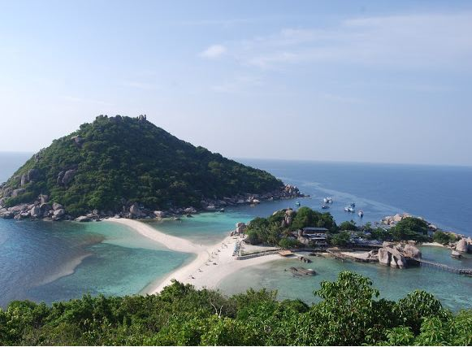

خُلجَان:
هو مسطح مائي محاط باليابسة من ثلاث جهات. أغلب الخلجان تكونت أو توسعت كنتيجة لارتفاع مستوى سطح البحر عند نهاية العصر الجليدي. بعض هذه الخلجان -كخليج كاليفورنيا ،خليج عمان، الخليج العربي - تكونت نتيجة لعمليات التصدع الهابط للقشرة الأرضية، وهو ما يؤدي إلى انخفاض أجزاء من الخط الساحلي إلى ما تحت مستوى سطح البحر. يتصل الخليج عادة بالبحر عن طريق ممر مائي أو مضيق، وقد تكون خصائص مياه الخليج ونسبة الترسبات مختلفة عن البحر المتصل به.
خليج بونيفاسيو الفرنسي
جزيرة بونيفاسيو من أجمل الجزر والخليج الذي يقع عليها والمسمى باسمها و الذي يوجد جنوب فرنسا من أجمل خلجان العالم روعة وجمالا يطل على البحر المتوسط في مطلات رائعة الجمال وهو قديم جدا من العصور الحجرية وهو يعتبر حصن طبيعي حيث كان سببا في حماية مدينته من الغزاة على مر العصور.
خليج الجنة
من اسم هذا الخليج نستشف إلى أي مدى هو خليج رائع الجمال فهو ميناء للسفن رائع تحيط به منحدرات جليدية رائعة الجمال خيالية في القطب الجنوبي غرب قارة انتاركتيكا وهي منطقة جاذبة للسياح بشدة.
خليج كونانغ يوان بتايلند
ليس هذا هو الخليج الوحيد الجميل الموجود بتيلاند فا تيلاند بها عدة خلجان ولكن هذا يعد أروع خليج فيهم فهو مرتبط بجزيرة كونانغ يوان الصغيرة الجميلة والتي تتصف بمناظرها الطبيعية الرائعة مما جعلها مزار يتردد عليه الزوار يوميا لممارسة الرياضة والغطس.
خليج فندي على المحيط الأطلسي من العجائب الحديثة
بين مقاطعتي نيو بورنزويك ونوفا سكوتيا بكندا على المحيط الأطلسي يقع خليك فندي الذي يتسم بحركات المد والجزر العالي جدا الذي يصل إلى 14 متر وهو الأعلى بين حركات مد المياه في العالم بارتفاع الماء وانخفاضه مرة يوميا حيث يرتفع وينخفض في ست سعات والخليج من الروعة والجمال بصخوره العجيبة وسواحله الرائعة الجمال الجاذبة للسياحة بصورة كبيرة حتى انه وصل في عام 2009 إلى المرحلة النهائية في مسابقة الطبيعة لعجائب الدنيا السبع الحديثة.
خليج كوركوفادو في ريودي جنيرو
الحدباء أو موركوفادو في البرازيل بريو دي جينيرو هو من أجمل خلجان العالم بما يتميز به من جمعه لتضاريس مختلفة بما فيه من سهول وجبال وغابات وشواطئ رائعة ليس لها مثيل في باقي خلجان العالم
خليج با ن ناه في بحر اندامان بتايلاند
انه خليج رائع يتصل به مجموعة من الجزر وأشباه الجزر والتي أشهرها جزيرة جيمس بوند وهو متصل بشبه جزيرة مالاي بينسولا بجنوب تايلاند وسر جماله في كثرة الكهوف المتصلة به التي تمتلئ بالحجارة الجيرية القديمة من أكثر من عشرة ألاف سنه.
- خليج عدن، يقع قبالة الركن الجنوبي الغربي لشبه الجزيرة العربية
- خليج ألاسكا في المحيط الهادئ جنوب ولاية ألاسكا.
- خليج أمبراكيكوس
- خليج أموندسن في المحيط المتجمد الشمالي شمالي غربي كندا.
- خليج العقبة يقع عند الطرف الشمالي ولاية البحر الأحمر.
- خليج أرغوليك.
- خليج البحرين، جزء من الخليج العربي
- خليج بوثنيه، جزء من بحر البلطيق بين السويد وفنلندا
- خليج قادش، جزء من المحيط الأطلسي مقبالة الحدود الجنوبية لإسبانيا والبرتغال.
- خليج كاليفورنيا، في المحيط الهادي، شمالي غربي المكسيك.
- خليج الفارالونز، غرباً من بداية خليج سان فرانسيسكو وخليج دراكيس حتى جزر فارالون.
- خليج فنلندا، بين الساحل الجنوبي لفنلندا والساحل الشمالي لإستونيا في بحر البلطيق. يؤدي إلى ميناء سانت بطرسبرغ في روسيا
- خليج جنوة داخل البحر الليغوري على الساحل الشمالي الشرقي لإيطاليا
- خليح هاوراكي، جزء من المحيط الهادئ بين منطقة أوكلاند وشبه جزيرة كورومانديل في الجزيرة الشمالية (نيوزيلندا)
- خليج الأسد، خليج على ساحل البحر الأبيض المتوسط بين لانغويدوك-روسيلون وبروفنس في فرنسا.
- خليج مين، قبالة ولايات نيوهامبشير مين، ماساتشوستس في الولايات المتحدة، والمقاطعات الكندية نيو برونزويك
- خليج ماليان، يقع غرب بحر إيجة، ويشكل جزءاً من الشريط الساحلي لمنطقة فثيوتيس اليونانية.
- خليج منار، بين الهند وسريلانكا.
- خليج نيكويا، في كوستاريكا بمنطقة أمريكا الوسطى.
- خليج عمان، بين جنوب شرقي شبه الجزيرة العربية وإيران وباكستان وبحر العرب.
- خليج أوريستانو، بالقرب من أوريستانو على الساحل الغربي لسردينيا.
- خليج تونس في البحر الأبيض المتوسط، قبالة سواحل مدينة تونس.
- خليج السويس في نهاية ولاية البحر الأحمر الشمالية، ويقود إلى قناة السويس